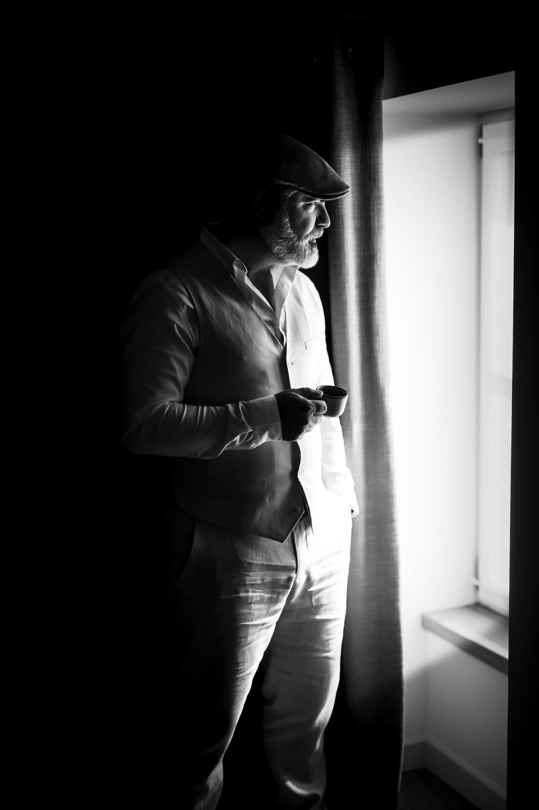

Home / About
About
I'm Philippe Sesti Soulier, an airline pilot and photographer.

Photography has been part of my life for more than fifteen years: for a long time as an amateur, then professionally since 2021, as a qualified photojournalist.
My job takes me across the world, often for just a few hours. I live those stopovers camera in hand: the golden light of the Karoo, a painted wall in Miami.
I look less for the spectacular than for character: a gaze, a gesture, a texture.
My photographs are available as fine art prints, made to order by WhiteWall, the German photo lab honoured several times at the TIPA World Awards, and shipped straight to your door.
Contact
For any question or a bespoke print, write to me: